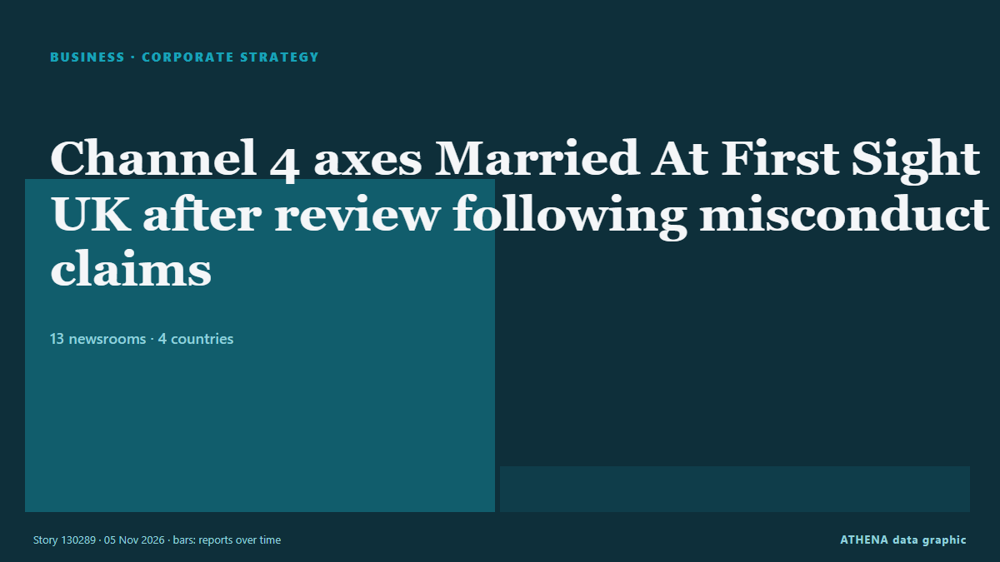

Unternehmensstrategie
GesponsertPräsentiert von  Cybernetics and Artificial Intelligence Lab Welcome to the Cybernetics and Artificial Intelligence Laboratory, established at the Department of Business Administration of the National and Kapodistrian University of Athens. The lab is headed by Professor Dimitrios Thomakos. The lab aims to do research that can be published in top venues. Our research uses tools and methods of Artificial Intelligence, and lies in the following areas: - Forecasting - Decision making - Cyber security - Finance We are always looking forward to collaborating with exceptional students!
Cybernetics and Artificial Intelligence Lab Welcome to the Cybernetics and Artificial Intelligence Laboratory, established at the Department of Business Administration of the National and Kapodistrian University of Athens. The lab is headed by Professor Dimitrios Thomakos. The lab aims to do research that can be published in top venues. Our research uses tools and methods of Artificial Intelligence, and lies in the following areas: - Forecasting - Decision making - Cyber security - Finance We are always looking forward to collaborating with exceptional students!
| 23. Okt. | 0 |
|---|---|
| 24. Okt. | 0 |
| 25. Okt. | 0 |
| 26. Okt. | 0 |
| 27. Okt. | 0 |
| 28. Okt. | 0 |
| 29. Okt. | 1 |
| 30. Okt. | 0 |
| 31. Okt. | 0 |
| 1. Nov. | 2 |
| 2. Nov. | 7 |
| 3. Nov. | 7 |
| 4. Nov. | 3 |
| 5. Nov. | 4 |
Schlagzeilen werden auf Englisch angezeigt, wie veröffentlicht.

Channel 4 axes Married At First Sight UK after review following misconduct claims
Channel 4 chief executive Priya Dogra also confirmed season six of the show, which was filmed earlier this year, would not be broadcast. von The Irish News (Belfast)
Toyota posts profit surge and lifts annual outlook as hybrid sales shine
Toyota on Thursday booked its first profit gain in six quarters and lifted its annual outlook by 15%, as a weaker yen and robust demand for higher-margin hybrid vehicles offset a slide in sales in… von Tuoi Tre News
Sony Q2 profit jumps on 'Spider-Man' and PlayStation boost
Blockbuster “Spider-Man: Brand New Day” delivered a major boost to Sony’s September quarterly earnings on the top and bottom lines. von Variety
AD Ports Group appoints Dr Afif Saif Al Yafei as Group Chief Executive Officer
AD Ports Group , a leading global enabler of integrated trade, industry and logistics solutions, announced the appointment of Dr. von Cyprus Shipping News
Arm beats second-quarter revenue estimates on AI and data-center demand
It expects to sell US$2 billion worth of its CPU, the AGI CPU, in fiscal 2027 and 2028. von The Business Times
Canva announces layoffs, job changes for about 22% of workforce
The revamp leaves the company in a delicate financial balance. von The Business Times
Piraeus Port Authority nine-month profit falls 21.5%
Piraeus, Greece (Ports Europe) November 4, 2026 – Piraeus Port Authority (PPA) reported a 21.5% fall in nine-month profit to €59.7 million, but container throughput at Pier I grew in the third… von Ports Europe
Aramco acquires 49% stake in Saudi Arabia's Humain
RIYADH: Saudi Aramco has completed its acquisition of a 49 percent stake in artificial intelligence company Humain, formalising an agreement first announced in October 2025, in a transaction… von Arab News
Libya's top religious authority rules against wearing Nike clothes
The US company was named after the Greek goddess of victory, so the Dar al-Ifta said displaying its logo was unIslamic. von BBC News
Apple FYQ4 Revenue Tops Forecasts On iPhone Sales As New CEO John Ternus Steps Up
Apple revenue beat Wall Street forecasts rising 12% for the fiscal fourth quarter ended in September, led by strong iPhone sales. von Deadline
Nexperia sues Wingtech and its founder, demanding compensation for damages
Nexperia has launched legal action against its Chinese parent company, Wingtech Technology, demanding more than $2 billion in compensation, according to Wingtech. von NL Times
Palantir nearly doubles 3Q26 revenue, riding wave of commercial demand
Palantir reported third-quarter 2026 revenue results that nearly doubled from the previous year. von DigiTimes Asia
Hinge is making a surprising change to its subscriptions. Here’s who stands to benefit
Hinge users may soon have access to a more affordable subscription tier. von Fast Company
Aramco’s Q3 profit jumps 34.5% to $36.3bn
RIYADH: Saudi Aramco’s net profit rose 34.5 percent year on year to $36.3 billion in the third quarter, boosted by higher revenue and a gain from the sale of its stake in Malaysian refining and… von Arab News
Seven Arrested in International Operation Targeting Investment Fraud
Authorities from seven countries seized more than 100 servers and arrested seven suspects of investment fraud that may have costed victims in at least 50 countries more than $4.6 million. von OCCRP
Retailer Zalando launches AI shopping agent as margins squeezed
Zalando beat sales expectations in the third quarter and introduced its first AI-powered shopping tool, but investors focused on weaker margins. von The Next Web
New Apple CEO John Ternus chalks up some early wins, but the honeymoon is over
Apple beat earnings expectations Monday, but it’s facing surging memory chip costs and investor questions about its new Siri AI product. von Fortune
Nakilat Names Nine New Gas Carriers in South Korea
Qatar Gas Transport Company (Nakilat) has named nine new gas carriers at three South Korean shipyards, marking progress in its fleet expansion programs aimed at increasing LNG transportation capacity… von MarineLink
Posco Holdings Q3 profit surges 48% as steel rebounds
Posco Holdings reported a 48 percent on-year jump in third-quarter operating profit Monday, extending its earnings recovery for a third consecutive quarter as improving steel margins and stable… von Korea Herald